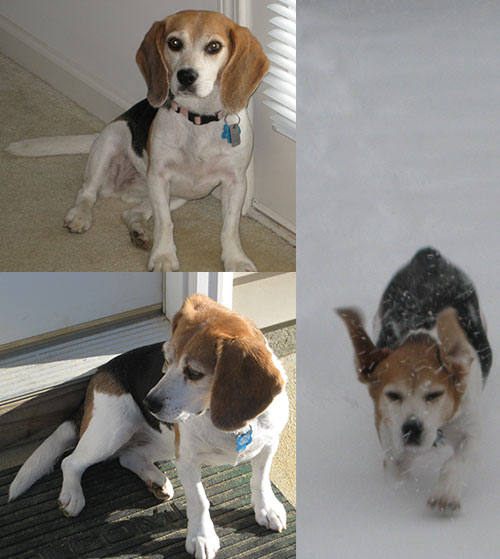

December 2015
 This is our little girl, Abbie. We adopted her from Nittany Beagle Rescue when she was about 3 years old. She is now 12 but still going strong. She is very special to us. She loves her daily walks, long car rides and having her belly rubbed. This is her favorite time of the year as she loves watching the squirrels scampering around in the back yard. She is quite the howler as our sitter from Pampered Pets can tell you, as she always greets her with a howl when she comes for her visits. It is nice to know that Abbie still gets her walks and lots of attention from Pampered Pets when we are away.
|